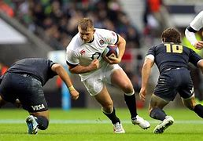
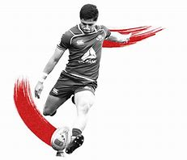
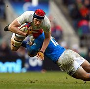
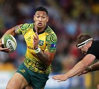
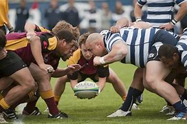

Rubgy
O que é Rugby ?
Rugby é um esporte coletivo que surgiu numa escola na cidade de Rugby (Inglaterra) no ano de1823(Todamateria, 2015).
Figura 11, Rugby.
Ele é disputado por duas equipes, em que os jogadores conduzem uma bola oval com as mãos, podendo também utilizar os pés para chutes e lançamentos(todamateria, 2015).
O Rugby é um esporte em que ocorre muito contato físico entre os jogadores. A versão original e mais tradicional é disputada por duas equipes de quinze jogadores, já a olímpica é disputada por duas equipes de sete jogadores(todamateria, 2015).
Qual o objetivo do Rugby?
Como qualquer esporte, o rugby tem como objetivo principal a pontuação(todamateria,2015).
Figura 12, Rugby.
O try no rugby é similar ao gol do futebol tradicional ou ao touchdown do futebol americano(todamateria,2015).
Para pontuar, os jogadores precisam alcançar a linha do gol, conhecida também como linha do H, e encostar a bola no chão(todamateria,2015).
Normalmente, os atletas correm em alta velocidade e acabam mergulhando no gramado para poderem marcar o ponto e fugir dos oponentes(todamateria,2015).
No fim, o time que mais pontuar ganha a partida! Após o try, o time que marcou tem direito a um chute direto para o travessão, o que é chamado de conversão(todamateria,2015).
Rugby no Brasil.
Por incrível que pareça, o rugby no Brasil é uma modalidade antiga que já está presente no país desde 1891, ano oficial de seu surgimento(BATISTA,2012).
Figura 13, Rugby.
os relatos da época, as partidas do esporte começaram a ser executadas em Salvador, na Bahia(BATISTA,2012).
Apenas em 1963 que a União de Rugby do Brasil (URB) foi criada.Em 1970, a URB se transformou na Associação Brasileira de Rugby (ABR) e, somente 40 anos depois, foi fundada a atual Confederação Brasileira de Rugby (CBRu)(BATISTA,2012).
Figura 14, Rugby.
Nos dias atuais, é a CBRu que coordena os campeonatos nacionais e as participações internacionais(BATISTA,2012).
Regras do Rugby.
• A equipe deve avançar no campo para marcar pontos. Os jogadores podem passar a bola, desde que seja para um companheiro que esteja atrás dele(BATISTA,2012).
Figura 15, Rugby.
- Os pontos podem ser marcados das seguintes formas:
- quando a equipe consegue conduzir a bola, tocando-a atrás da linha do gol adversário. Esta jogada é chamada de try e vale 5 pontos(BATISTA,2012);
- Após o try, um jogador pode tentar marcar mais dois pontos extras, chutando a bola entre os dois travessões do campo adversário(BATISTA,2012);
- Quando sofre uma penalidade (falta), o jogador pode tentar marcar 3 pontos chutando a bola entre os travessões do time adversário(BATISTA,2012);
- Outra forma de conseguir 3 pontos é através do drop goal. Isto ocorre quando um jogador de posse da bola, com o jogo em movimento, chuta entre os travessões do campo adversário(BATISTA,2012);
- Os jogos de Rugby duram 14 minutos, divididos em dois tempos de 7 minutos. A final tem a duração de 20 minutos, com dois tempos de 10 minutos(BATISTA,2012);
- Quando o jogo está em movimento e um jogador chuta a bola em direção ao campo adversário, somente ele ou outros jogadores de sua equipe (desde que esteja atrás da linha da bola no momento do chute), pode pegar a bola(BATISTA,2012);
- Evidentemente os jogadores da equipe adversária também tentarão pegar a bola(BATISTA,2012);
- Quando a bola é chutada para fora do campo, o time adversário tem o direito de cobrar o lateral (line-out)(BATISTA,2012);
- Se um jogador jogar a bola para a frente, ele comete uma infração chamada de Knock-on(BATISTA,2012);
- Uma jogada muito comum no Rugby e conhecida como Scrum. Esta jogada tem como objetivo repor a bola em jogo(BATISTA,2012);
- Três jogadores de cada equipe ficam juntos e agachados, tentando empurrar os adversários para ganhar a posse de bola(BATISTA,2012);
Referências:
- Fonte1:https://www.todamateria.com.br/rugby/Autor:todamateria;Acesso:16 de abril de 2023;
- Fonte2:BATISTA, Rafael. "Rúgbi"; Brasil Escola.Disponível:https://brasilescola.uol.com.br/educacao-fisica/rugbi.htm. Acesso em 16 de abril de 2023.